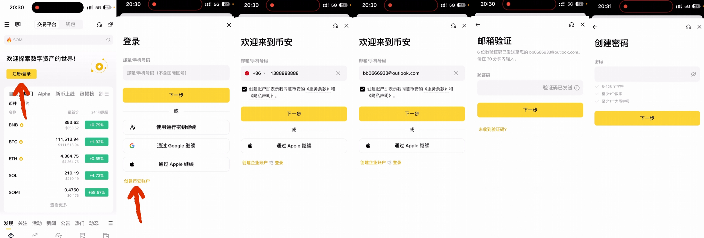
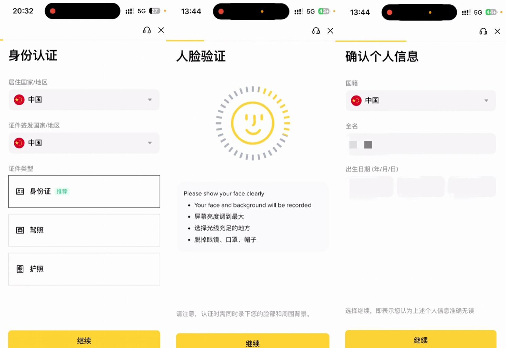
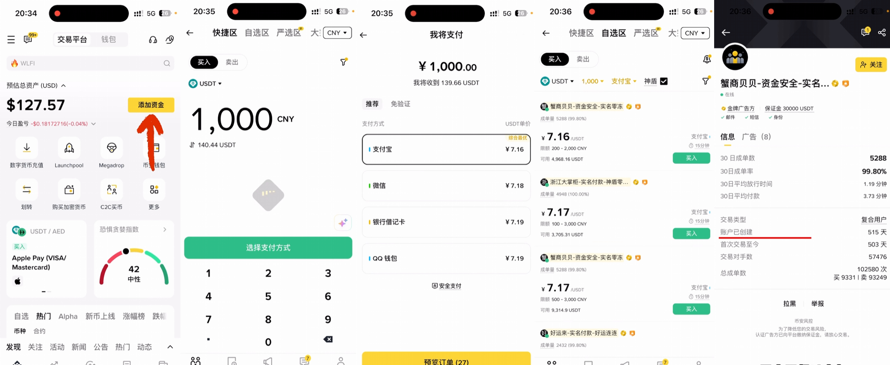
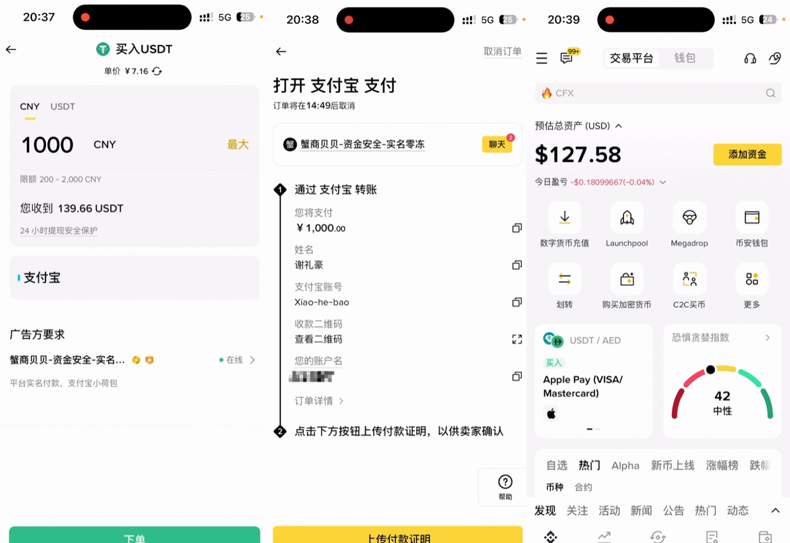
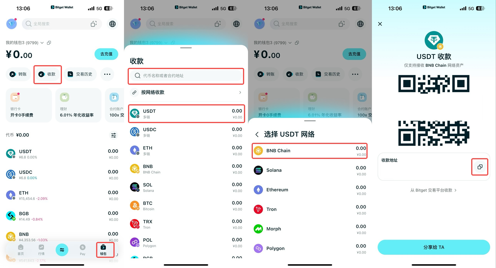
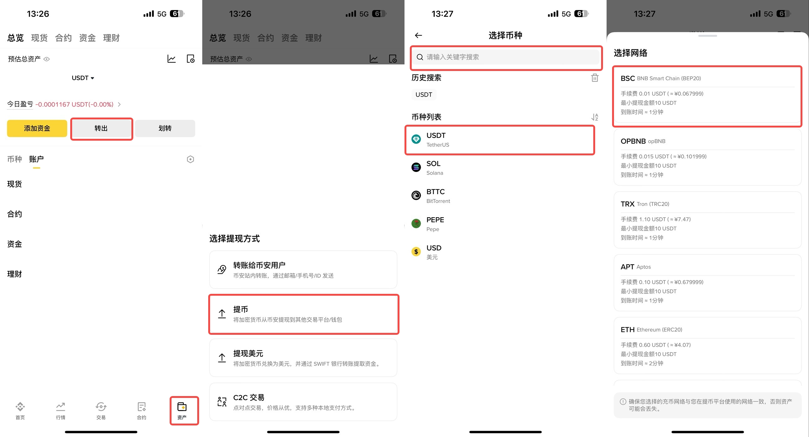

币安 App 注册、入金与提现教程
完成 Binance 注册、邀请码、入金和提现基础流程。
币安 App 注册 & 入金 & 提现教程
第一步：下载 App 并准备注册
安卓手机进入邀请链接注册（邀请码 WEB32026888）：https://www.bsmkweb.cc/activity/trading-competition/ref-tournament-july?ref=WEB32026888
苹果手机登陆港区ID，在 App Store 中检索：Binance 下载
1.打开币安（Binance）App，点击页面上的“注册或登录”，选择“创建币安账户”。
2.选择注册方式：支持使用手机号或邮箱注册。
手机号：支持中国大陆 +86 手机号。
邮箱：推荐使用海外邮箱（如 Outlook 或 Gmail），国内的 QQ 邮箱和 163 邮箱也可以正常使用。
3.输入邮箱或手机号后，点击下一步，前往邮箱/手机查收并输入验证码。
4.设置密码：密码要求至少 8 个字符，且必须包含至少 1 个数字和 1 个大写字母。

第二步：填写邀请码（获取手续费减免）
在密码设置完成后，系统会询问“您是否有邀请人”。
请务必选择“有”，并在邀请 ID 处填写：WEB32026888（字母需大写）。
福利：填写该邀请码，可以在后续的所有交易中，永久享受 20% 的手续费减免优惠。
第三步：完成身份认证（KYC）
注册成功后，系统会自动跳转到身份认证页面。必须完成认证才能进行买币和交易。
选择国家：“居住国家/地区”和“证件签发国家/地区”均选择中国。
上传证件：选择使用身份证进行认证，按照提示拍照并上传身份证正反面。
人脸识别：上传成功后，系统会要求进行简单的人脸识别（如根据提示眨眼、摇头等）。
确认信息：最后确认国籍、姓名和出生日期。请务必保证信息真实，否则无法通过审核。

第四步：进入买币页面
身份认证通过后，回到币安 App 首页。
点击首页的“添加资金”，选择“C2C 交易”。
C2C 页面包含四个区域：
快捷区：输入想买的金额和支付方式，系统自动匹配单价最优商家（适合新手和小额）。
自选区：可自行筛选条件、挑选商家（推荐，安全性更高）。
严选区：只有卖出功能，商家为有保障的“神盾商家”。
大宗区：针对大额交易。
第五步：在“自选区”筛选靠谱商家并下单
为了资金安全，推荐使用“自选区”购买。
设置筛选条件：例如输入想购买的金额（如 1000 人民币），支付方式筛选为“支付宝”或“微信”。
开启“神盾”：勾选开启“神盾商家”（这些商家在平台缴纳了大量保证金，交易更安全）。
挑选商家：
看成单量和成单率：选择数据较高的商家。
看账户存活时间：点开商家主页，查看其账户创建时间。建议选择注册超过半年以上的商家，时间越久证明其资产越安全。
确认要求并下单：
点击“买入”，输入想购买的金额。
仔细查看下方“广告方的要求”（例如有些商家要求必须实名付款、使用特定支付方式等）。
确认能满足对方要求后，点击下单。

第六步：脱离平台付款并收币
下单后，页面会显示商家的真实姓名和支付宝/微信账号。
离开币安 App，打开您的支付宝或微信，按照页面显示的账号给卖家转账。
注意：转账过程中遇到问题，可以在币安订单页面的聊天框与卖家沟通。
上传凭证并等待放币：转账成功后，务必截图保存付款凭证。回到币安 App，在聊天框将付款截图发给卖家作为凭证。
点击“我已付款，通知卖家”，等待卖家核实收款后，将 USDT 放行到您的账户中。

币安如何提现稳定币到Bitget钱包？
1.获取 Bitget 钱包收款地址
2.打开 Bitget Wallet App。点击首页底部的“钱包”再点击 “收款” (Receive)。
3.搜索或直接选择 USDT。
4.键步骤：选择网络。建议选择 BNB Chain (BEP20)

在币安发起提现
1.打开 币安 (Binance) App，进入右下角“资产”。
2.点击“转出” -> “提币”搜索并选择 USDT，选择“通过区块链转账”。
3.粘贴地址：将刚才从 Bitget 钱包复制的地址粘贴进来。
4.匹配网络：选择与你在 Bitget 钱包中完全一致的网络（如果你选了 BNB Chain，这里也要选 BNB Smart Chain BEP20）。
5.输入提现金额，点击“提现”并完成安全验证。等待到账：通常 2-5 分钟后，资金会出现在你的 Bitget 钱包余额中。
